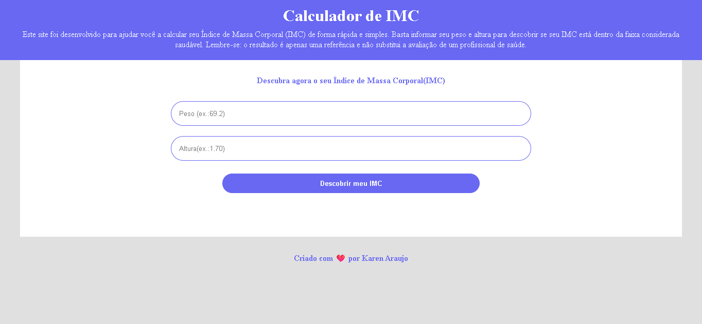

To Do List
Sobre o Projeto
Este projeto foi criado utilizando Javascript, HTML e CSS.
O projeto é uma página simples que calcula o índice de massa corporal a partir de dados fornecidos pelo usuário.
Imagem do Projeto

Tecnologias Utilizadas
- HTML5
- CSS3
- Javascript
- Git e GitHub
Conceitos praticados
- Eventos dom
- Funções em Javascript
- Operações com js
- estrutura condicional
- HTML semântico
- Variáveis CSS